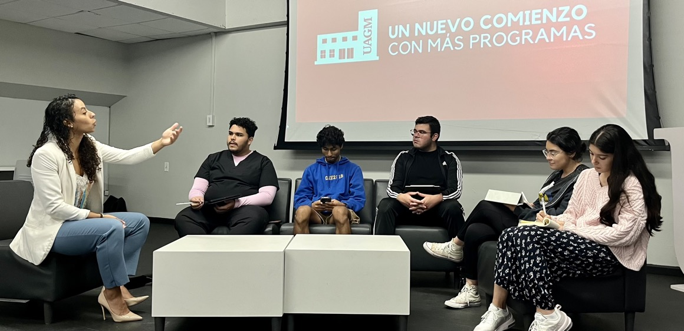
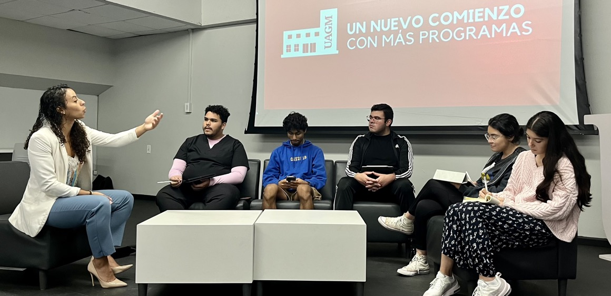

Conversation with Senior MSL @ Caris
November 07, 2023 - Authored by: Emmanuel Franceschini-Rosado
Attending Dra. Yashira Negrón's seminar proved to be an enlightening experience, providing a comprehensive insight into various scientific domains. The seminar delved into diverse realms within science, encompassing the pharmaceutical industry, manufacturing, prestigious laboratory work, and the role of a Medical Science Liaison (MSL) at Caris Life Science. Dra. Negrón adeptly presented a holistic view of potential career paths within the scientific field.

Photo: Dra. Negrón (far left) conversing with students at Universidad Ana G. Méndez (UAGM) Cupey Campus. Blog article author Emmanuel Franceschini-Rosado is sitting in the middle (third person right to left). Also present is Sebastián A. Rosario-Torres, president of the American Chemical Society (ACS) student association at UAGM Cupey.
An MSL serves as a subject matter expert pivotal to pharmaceutical, biotech, or medical companies, engaging with the medical community to advise on upcoming treatments and advocate current technologies, ultimately addressing patients' medical needs. Dra. Negrón operates within Caris Life Sciences, a pioneering biotech company founded by David Dean Halbert, dedicated to revolutionizing healthcare through precision medicine. Caris notably achieved the development of the world's foremost comprehensive tumor profiling service, offering personalized treatment strategies based on complete molecular blueprints, significantly enhancing outcomes in cancer care.
Within the ever-evolving landscape of scientific innovation, individuals have diverse avenues to contribute to the scientific community. These pathways span medicine, research, clinical technician roles, laboratory assistance, scientific writing, manufacturing science, pharmaceutical expertise, and academic progression from post-baccalaureate to PhD levels, among others. As a scientist, the mandate involves leveraging acquired knowledge, technological advancements, and opportunities to contribute meaningfully, collaborate when necessary, and explore innovative breakthroughs across various scientific spheres.
Dr. Rivera's introduction of Dra. Negrón as a resource to our institution proved immensely valuable. The seminar provided an excellent networking opportunity, connecting science enthusiasts and professionals in an enriching environment.
The discussion during the seminar illuminated the intricate interplay between scientific disciplines. For instance, the pharmaceutical industry was delineated as a multifaceted arena encompassing drug discovery, development, regulatory affairs, and commercialization. Understanding these facets allows scientists to appreciate the complex journey of bringing a pharmaceutical product from inception to market availability, involving meticulous research, stringent regulatory compliance, and market strategy.
Furthermore, insights into the manufacturing realm shed light on the pivotal role of scientists in ensuring product quality, efficacy, and scalability. Discussions emphasized the integration of cutting-edge technology and process optimization to streamline production while maintaining stringent quality standards.
The discourse on laboratory work underscored the significance of meticulous experimentation and data analysis in driving scientific discoveries. The dynamic role of laboratory assistants and technicians in facilitating research activities was highlighted, showcasing the collaborative nature of scientific endeavors.
In the sphere of Medical Science Liaison (MSL) roles, the discussion extended to the essential role these professionals play in bridging the gap between scientific knowledge and its practical application in clinical settings. Their expertise in communicating complex scientific information to healthcare professionals and stakeholders contributes significantly to advancing patient care and treatment outcomes.
Moreover, the seminar delved into the revolutionary strides made by Caris Life Sciences in the realm of precision medicine. The development of comprehensive tumor profiling services exemplifies the power of personalized medicine, tailoring treatments based on individual molecular profiles, thereby transforming cancer care paradigms.
In summary, Dra. Negrón's seminar not only elucidated diverse career paths within science but also highlighted the interconnectedness of various scientific disciplines. It underscored the crucial role of scientists in driving innovation, improving patient outcomes, and shaping the future of healthcare through their relentless pursuit of knowledge and collaboration across interdisciplinary boundaries.

Photo: Dra. Negrón (far left) conversing with students at Universidad Ana G. Méndez (UAGM) Cupey Campus. Blog article author Emmanuel Franceschini-Rosado is sitting in the middle (third person right to left). Also present is Sebastián A. Rosario-Torres, president of the American Chemical Society (ACS) student association at UAGM Cupey.
An MSL serves as a subject matter expert pivotal to pharmaceutical, biotech, or medical companies, engaging with the medical community to advise on upcoming treatments and advocate current technologies, ultimately addressing patients' medical needs. Dra. Negrón operates within Caris Life Sciences, a pioneering biotech company founded by David Dean Halbert, dedicated to revolutionizing healthcare through precision medicine. Caris notably achieved the development of the world's foremost comprehensive tumor profiling service, offering personalized treatment strategies based on complete molecular blueprints, significantly enhancing outcomes in cancer care.
Within the ever-evolving landscape of scientific innovation, individuals have diverse avenues to contribute to the scientific community. These pathways span medicine, research, clinical technician roles, laboratory assistance, scientific writing, manufacturing science, pharmaceutical expertise, and academic progression from post-baccalaureate to PhD levels, among others. As a scientist, the mandate involves leveraging acquired knowledge, technological advancements, and opportunities to contribute meaningfully, collaborate when necessary, and explore innovative breakthroughs across various scientific spheres.
Dr. Rivera's introduction of Dra. Negrón as a resource to our institution proved immensely valuable. The seminar provided an excellent networking opportunity, connecting science enthusiasts and professionals in an enriching environment.
Expanding further
The discussion during the seminar illuminated the intricate interplay between scientific disciplines. For instance, the pharmaceutical industry was delineated as a multifaceted arena encompassing drug discovery, development, regulatory affairs, and commercialization. Understanding these facets allows scientists to appreciate the complex journey of bringing a pharmaceutical product from inception to market availability, involving meticulous research, stringent regulatory compliance, and market strategy.
Furthermore, insights into the manufacturing realm shed light on the pivotal role of scientists in ensuring product quality, efficacy, and scalability. Discussions emphasized the integration of cutting-edge technology and process optimization to streamline production while maintaining stringent quality standards.
The discourse on laboratory work underscored the significance of meticulous experimentation and data analysis in driving scientific discoveries. The dynamic role of laboratory assistants and technicians in facilitating research activities was highlighted, showcasing the collaborative nature of scientific endeavors.
In the sphere of Medical Science Liaison (MSL) roles, the discussion extended to the essential role these professionals play in bridging the gap between scientific knowledge and its practical application in clinical settings. Their expertise in communicating complex scientific information to healthcare professionals and stakeholders contributes significantly to advancing patient care and treatment outcomes.
Moreover, the seminar delved into the revolutionary strides made by Caris Life Sciences in the realm of precision medicine. The development of comprehensive tumor profiling services exemplifies the power of personalized medicine, tailoring treatments based on individual molecular profiles, thereby transforming cancer care paradigms.
In summary, Dra. Negrón's seminar not only elucidated diverse career paths within science but also highlighted the interconnectedness of various scientific disciplines. It underscored the crucial role of scientists in driving innovation, improving patient outcomes, and shaping the future of healthcare through their relentless pursuit of knowledge and collaboration across interdisciplinary boundaries.
Authored by:
About RIVERA-OMICS:
OMICS (Omics Molecular Innovations and Commercialization Strategies), is an entity built to develop omics-focused academic research projects and investigate the commercial landscape of novel biotechnologies and biomedicines. OMICS is a branch of RIVERA Initiatives Inc, a non-profit organization that seeks to empower academia through comprehensive resources and collaborative research endeavors to advance educational excellence and innovation.
For inquiries, please contact:
research@riveraomics.org